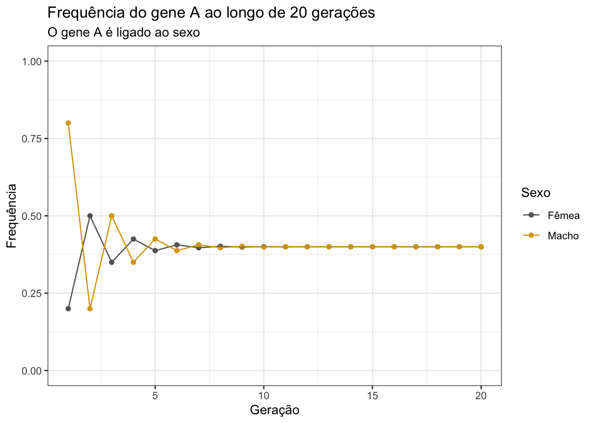

Provas
Nessa página, encontram-se as soluções para as provas da disciplina “Genética Quantativa” (UENF), ministrada pelo professor Messias Pereira Gonzaga.
Prova 1
Q1
(21%) Considerando uma planta de mamão duplo heterozigota (AaBb), sendo:
Loco A – determina o sexo da planta (AA = letal; Aa = hermafrodita e aa = feminina)
Loco B – determina a cor de polpa do fruto: (BB e Bb = polpa amarela; bb = polpa vermelha).
Considere que os locos são independentes. Considerando-se o plantio de uma progênie resultante da autofecundação desta planta, responda:
a) Qual a proporção de plantas hermafroditas e de polpa vermelha?
Da autofecundação de AaBb, temos:
Loco A: 2/3 hermafroditas : 1/3 femininas (n = 3, pois AA é letal)
Loco B: 3/4 polpa amarela : 1/4 polpa vermelha
Portanto:
\[ \begin{aligned} P(\text{hermafrodita e polpa vermelha}) &= \frac{2}{3} \times \frac{1}{4} \\ &= \frac{1}{6} = 0.1666667 = 16.66667\% \end{aligned} \]
b) Considerando-se 5 plantas ao acaso, qual a probabilidade de todas as plantas serem hermafroditas e de polpa amarela?
\[ \begin{aligned} P(\text{5 hermafroditas e polpa amarela}) &= (\frac{2}{3} \times \frac{3}{4})^5 \\ &= (\frac{1}{2})^5 \\ &= \frac{1}{32} = 0.03125 = 3.125\% \end{aligned} \]
c) Quantas mudas devem ser plantadas para ter 95% de segurança de que pelo menos uma planta seja do tipo mais aceito comercialmente (hermafrodita e de polpa vermelha)?
Probabilidade de obter o tipo mais aceito comercialmente: \(\frac{1}{6}\)
Pelo menos uma do tipo mais aceito comercialmente: \(1 - (\frac{5}{6})^n\)
Para 95% de segurança, temos:
\[ \begin{aligned} 1 - (\frac{5}{6})^n &= 0.95 \\ 0.05 &= (\frac{5}{6})^n \\ \log 0.05 &= n \log \frac{5}{6} \\ \\ n &= \frac{\log 0.05}{\log \frac{5}{6}} \\ &= 16.43 = \text{17 plantas} \end{aligned} \]
Q2
(15%) Mostre graficamente a aproximação ao equilíbrio sob acasalamento ao acaso para o caso de um gene ligado ao sexo. Considere as seguintes frequências iniciais: qf = 0,2 e qm = 0,8. Qual a freqüência gênica (q) no equilíbrio?
Implementando uma função para calcular frequências de genes ligados ao sexo em machos e fêmeas:
options(scipen = 99999)
calc_freq_xlinked <- function(pm0 = NULL, pf0 = NULL,
generations = 10) {
df <- data.frame(
Generation = seq_len(generations),
pf = c(pf0, rep(NA, generations - 1)),
pm = c(pm0, rep(NA, generations - 1))
)
for(t in 2:generations) {
df[t, "pf"] <- (df[t-1, "pm"] + df[t-1, "pf"]) / 2
df[t, "pm"] <- df[t-1, "pf"]
}
df$difference <- df$pf - df$pm
return(df)
}Aplicando função com dados do enunciado e demonstrando graficamente, simulando 20 gerações:
suppressPackageStartupMessages(library(tidyverse))
# Simulando 20 gerações
freq20 <- calc_freq_xlinked(pm0 = 0.8, pf0 = 0.2, generations = 20)
# Visualizando simulação
freq20[, 1:3] %>%
tidyr::pivot_longer(
!Generation, names_to = "sex", values_to = "freq"
) %>%
mutate(sex = str_replace_all(sex, c("pf" = "Fêmea",
"pm" = "Macho"))) %>%
ggplot(., aes(x = Generation, y = freq)) +
geom_point(aes(color = sex)) +
geom_line(aes(group=sex, color=sex)) +
scale_color_manual(values = c("grey40", "goldenrod")) +
theme_bw() +
ylim(0,1) +
labs(
color = "Sexo",
title = "Frequência do gene A ao longo de 20 gerações",
subtitle = "O gene A é ligado ao sexo",
x = "Geração", y = "Frequência"
)
Verificando a frequência de q no equilíbrio:
freq20## Generation pf pm difference
## 1 1 0.2000000 0.8000000 -0.600000000000
## 2 2 0.5000000 0.2000000 0.300000000000
## 3 3 0.3500000 0.5000000 -0.150000000000
## 4 4 0.4250000 0.3500000 0.075000000000
## 5 5 0.3875000 0.4250000 -0.037500000000
## 6 6 0.4062500 0.3875000 0.018750000000
## 7 7 0.3968750 0.4062500 -0.009375000000
## 8 8 0.4015625 0.3968750 0.004687500000
## 9 9 0.3992187 0.4015625 -0.002343750000
## 10 10 0.4003906 0.3992187 0.001171875000
## 11 11 0.3998047 0.4003906 -0.000585937500
## 12 12 0.4000977 0.3998047 0.000292968750
## 13 13 0.3999512 0.4000977 -0.000146484375
## 14 14 0.4000244 0.3999512 0.000073242188
## 15 15 0.3999878 0.4000244 -0.000036621094
## 16 16 0.4000061 0.3999878 0.000018310547
## 17 17 0.3999969 0.4000061 -0.000009155273
## 18 18 0.4000015 0.3999969 0.000004577637
## 19 19 0.3999992 0.4000015 -0.000002288818
## 20 20 0.4000004 0.3999992 0.000001144409A frequência de q no equilíbrio é de aproximadamente 0.40 ou 40%.
Q3
(26%) Na geração parental “0,” uma determinada população é formada por 100% do genótipo duplo heterozigoto “AaBb.” Considerando acasalamento ao acaso em gerações sucessivas, pergunta-se:
a) Quais as frequências gaméticas iniciais e no equilíbrio se os locos estiverem (1) não ligados, (2) ligados (fase aproximação) com uma frequência de recombinação de 40%?
- Locos não ligados:
Gametas: 25% AB : 25% ab : 25% Ab : 25% aB
- Loco ligados:
b) Qual a freq. do genótipo “AaBb” quando a população estiver atingida o equilíbrio, se os locos estiverem (1) não ligados, (2) ligados (fase aproximação) com uma frequência de recombinação de 40%?
Q4
(20%) Considerando um indivíduo hexaploide com o seguinte genótipo: AAAaaa, sendo o referido loco localizado distante do centrômero, sendo o mesmo, dominante para porte: aaaaaa = porte baixo e demais genótipos de porte alto. Da autofecundação da referida planta, pergunta-se:
a) Quais os tipos de gametas a serem produzidos e as respectivas proporções?
b) Quais as frequências fenotípicas?
Q5
(18%) Falso ou verdadeiro. (Se falso, marque a parte que invalida)
a) ( F ) Caracteres quantitativos diferem dos qualitativos basicamente por serem determinados por vários genes e serem pouco influenciados pelo ambiente.
Caracteres quantitativos são muito influenciados pelo ambiente.
b) ( V ) A segregação cromossômica é considerada quando o loco em questão se situa muito próximo ao centrômero.
c) ( V ) Em uma população em EHW, quando p = q, as freqüências genotípicas em geral atingem o máximo.
d) ( F ) No caso de gene ligado ao sexo, a cada geração de cruzamento ao acaso, a diferença de freqüência gênica entre pai e mãe é reduzida à metade, porém, a frequência na mãe é sempre maior por se tratar do sexo homogamético (XX).
A frequência não é sempre maior na mãe. Se a frequência é maior na mãe na geração n, na geração n+1 a frequência será maior no pai, na n+2 será maior na mãe, e assim sucessivamente (ver gráfico da questão 2).
e) ( V ) Em uma população em EHW, para um alelo raro recessivo, a grande maioria dos genótipos recessivos são oriundos de indivíduos normais.
f) ( V ) Quanto maior o número de locos, mais rapidamente se observa a aproximação ao equilíbrio quando em cruzamento ao acaso.